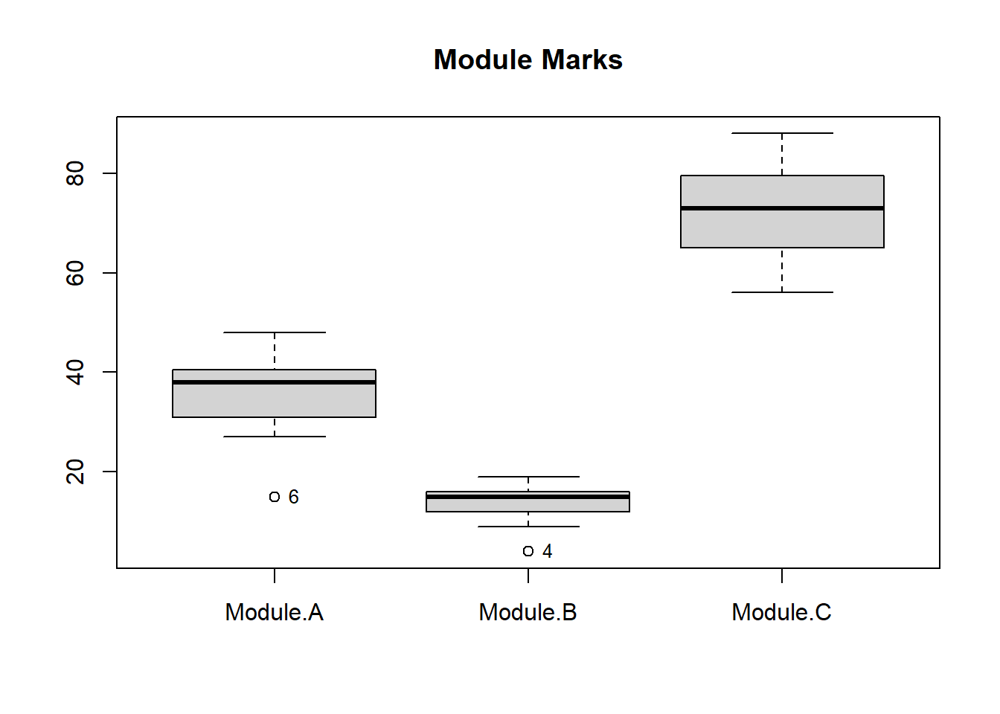
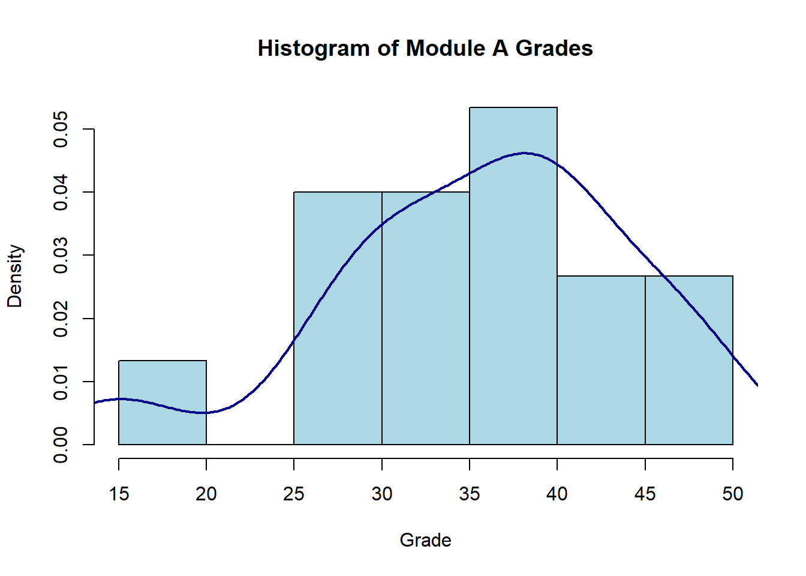
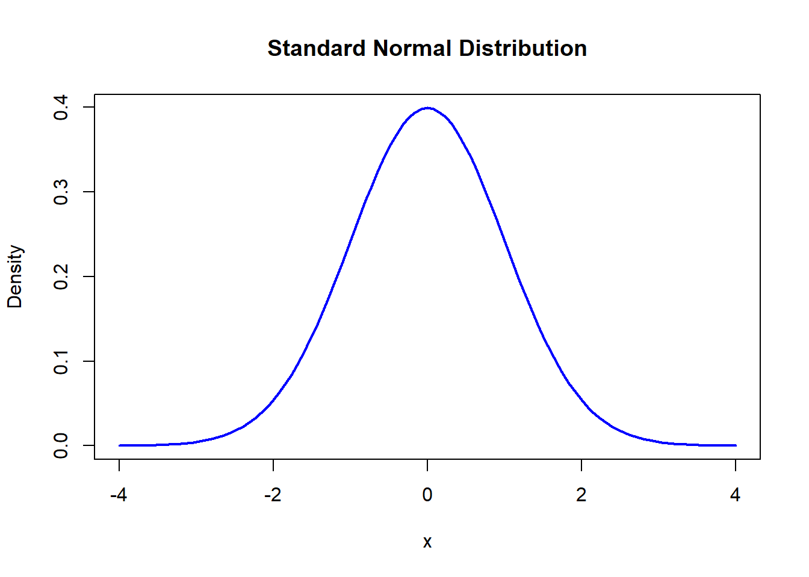

1 + 1[1] 2This document was built using Quarto. Quarto enables you to weave together content and executable code into a finished document. To learn more about Quarto see https://quarto.org.
Below is a snippit of R code that is executed when the document is created.
You can copy these code snippits into your own RStudio to begin to build you own analyses. As you go through the document create a new R script in RStudio and add the code section one after another. By then of this each section you will have built an analysis pipeline for each type of design. You can then use this as a basis for future analyses.
In the previous tutorial we learnt how to load data files, manipulate data formats, generate descriptive statistics, and create plots. In this tutorial we will look at some simple data screening techniques to prepare data for statistical testing (in later tutorials)
The data we will use here is from a researcher who was evaluating student performance across 3 modules, to assess whether performance was consistent. The marks for 15 students were evaluated. Module A had an assessment with 50 marks, Module B was marked out of 20, and Module C was marked out of 100. You can see the structure of the data below, not all rows are displayed, just the first three and the last.
| Module A | Module B | Module C |
|---|---|---|
| 27 | 15 | 75 |
| 30 | 18 | 62 |
| 41 | 10 | 82 |
| . | . | . |
| . | . | . |
| 32 | 12 | 75 |
Just like last time the first thing we need to do is to load the data, but we will also clear the environment of data first.
Module.A Module.B Module.C
1 27 15 75
2 30 18 62
3 41 10 82
4 38 4 56
5 38 17 80
6 15 15 73One thing to notice is that the names of the columns have changed slightly, in the .csv file they had a space between ‘Module’ and the letter. However, R does not like spaces in names, so has automatically replaced the space with a .. As mentioned in the previous tutorial this rule about spaces also applies to variable names for other objects.
Just as we did previously we can get some descriptive statistics about our data:
Module.A Module.B Module.C
Min. :15.00 Min. : 4.0 Min. :56.00
1st Qu.:31.00 1st Qu.:12.0 1st Qu.:65.00
Median :38.00 Median :15.0 Median :73.00
Mean :35.67 Mean :13.6 Mean :72.13
3rd Qu.:40.50 3rd Qu.:16.0 3rd Qu.:79.50
Max. :48.00 Max. :19.0 Max. :88.00 Module.A Module.B Module.C
8.591247 3.887710 9.485829 Although these mean and standard deviation values look different for the different modules, that is not suprising given that they were scored out of different totals of marks.
We can use R to perform some different calculations that make them easier to compare.
The first might be to express all scores as percentages, to do this we need to tell R the total marks available for each module. Then we divide the actual marks by the total and multiply by 100. We can do this one by one or we can use a function called sweep() that is designed for this purpose
[1] 75 90 50 20 85 75 65 45 60 65 75 75 85 95 60 Module.A Module.B Module.C
1 54 75 75
2 60 90 62
3 82 50 82
4 76 20 56
5 76 85 80
6 30 75 73Although percentages standardise the scores to the same range of 0-100. They don’t take into account that some modules might be harder than others. We can see this if we look at the means of the percentage based scores:
Module.A Module.B Module.C
Min. :30.00 Min. :20 Min. :56.00
1st Qu.:62.00 1st Qu.:60 1st Qu.:65.00
Median :76.00 Median :75 Median :73.00
Mean :71.33 Mean :68 Mean :72.13
3rd Qu.:81.00 3rd Qu.:80 3rd Qu.:79.50
Max. :96.00 Max. :95 Max. :88.00 Now of course it might be that we want to statistically test if some modules are harder/easier than others, in which case percentages are fine. However, often when first inspecting data we want to just check that the data is distributed in a certain way and that we don’t have any outliers. One common procedure at this stage is to calculate z-scores. To do this we first subtract the mean of that set of data, this removes any average differences. Then we divide these values by the standard deviation of the original values, this scales the data to have the same variability.
[1] 2.84005e-16[1] 1This mean score appears unusual, it includes e and a number. This means that the decimal point would actually be that number of decimal place to the left (e.g. e-16 means 16 decimal places to the left). It is shown in this way to make the tables and figures easier to read and to display easier on computer screens in general. This notation is used anytime we have very large or very small numbers, the key is to check if there is there is a + or - symbol between the e and the number. If there is a + then we have a very large number and if we have a - we have a very small number.
Fortunately, instead of using the formula (x-mean(x))/std(x) on each column one by one ourselves, R contains a function called scale() that can calculate z-scores for each column separately for us in one go.
Module.A Module.B Module.C
[1,] -1.0087787 0.3601092 0.30220518
[2,] -0.6595861 1.1317718 -1.06826017
[3,] 0.6207869 -0.9259951 1.04014806
[4,] 0.2715943 -2.4693203 -1.70078264
[5,] 0.2715943 0.8745509 0.82930724
[6,] -2.4055491 0.3601092 0.09136436 Module.A Module.B Module.C
Min. :-2.4055 Min. :-2.4693 Min. :-1.70078
1st Qu.:-0.5432 1st Qu.:-0.4116 1st Qu.:-0.75200
Median : 0.2716 Median : 0.3601 Median : 0.09136
Mean : 0.0000 Mean : 0.0000 Mean : 0.00000
3rd Qu.: 0.5626 3rd Qu.: 0.6173 3rd Qu.: 0.77660
Max. : 1.4356 Max. : 1.3890 Max. : 1.67267 Module.A Module.B Module.C
1 1 1 You’ll notice that the third line of code there is new to us, it is included because the scale() function returns its output as a matrix and not a dataframe like we have been using for our data so far. You can check this in the help for the function by typing ?scale into the command window. I have converted xDF back into a dataframe as it is easier to use in some of the subsequent steps.
We’ve previously used the boxplot() function to create a boxplot, but we can also use it to help identify outliers. The boxplot() function uses a rule often called 1.5×IQR, IQR stands for the inter-quartile range, it is the difference between 1st Qu. and 3rd Qu. in the summary tables we produced earlier. Outliers are anything that are less than 3rd Qu. - 1.5×IQR or greater than 1st Qu. + 1.5×IQR.
As well as just plotting, we can ask boxplot() to produce an output that contains some information about the outliers, such as their value, and use this to label them.
However, knowing the value of the outlier is useful but it would be more useful to know which row in the dataframe it came from so we could potentially remove it later.

Another method for identifying outliers, relies on the z-scores instead of inspecting boxplots. There are different rules suggested by different people but a common one might be to label any points that are >2 or <-2 in z-scores. We can do this in R quite easily.
Module.A Module.B Module.C
[1,] FALSE FALSE FALSE
[2,] FALSE FALSE FALSE
[3,] FALSE FALSE FALSE
[4,] FALSE FALSE FALSE
[5,] FALSE FALSE FALSE
[6,] FALSE FALSE FALSE
[7,] FALSE FALSE FALSE
[8,] FALSE FALSE FALSE
[9,] FALSE FALSE FALSE
[10,] FALSE FALSE FALSE
[11,] FALSE FALSE FALSE
[12,] FALSE FALSE FALSE
[13,] FALSE FALSE FALSE
[14,] FALSE FALSE FALSE
[15,] FALSE FALSE FALSE Module.A Module.B Module.C
[1,] FALSE FALSE FALSE
[2,] FALSE FALSE FALSE
[3,] FALSE FALSE FALSE
[4,] FALSE TRUE FALSE
[5,] FALSE FALSE FALSE
[6,] TRUE FALSE FALSE
[7,] FALSE FALSE FALSE
[8,] FALSE FALSE FALSE
[9,] FALSE FALSE FALSE
[10,] FALSE FALSE FALSE
[11,] FALSE FALSE FALSE
[12,] FALSE FALSE FALSE
[13,] FALSE FALSE FALSE
[14,] FALSE FALSE FALSE
[15,] FALSE FALSE FALSENotice above that this returns a matrix of TRUE or FALSE values, these are known as logical values and are returned whenever we ask a conditional statement such as if something is greater than or less than something. They will be FALSE whenever that statement was not true, as we can see no values are greater than 2 z-scores. However, they will be TRUE whenever that statement was satisfied, we can see that the 6th row in module A and the fourth row in Module B were less than 2.
A note here, many students get caught up in understanding exactly what rule should be used to identify outliers. Often the same outliers will be found by different rules (as is the case above), sometimes different sets will be found by different rules. We will cover more of this in the main statistics course but be aware that there does not exist one simple rule that is correct for all situations.
Many statistical tests assume that the data has a normal distribution. By plotting a histogram, we can check whether this is the case. We can also identify outliers that may be skewing the data. We can easily plot histograms in R:
However, this is relatively simple so we want to clean it up by adding some proper axis labels. Also it is often nice to overlay a smoothed density line over the top of the histogram to better visualise if we think the data is normally distributed.

It looks like the data does not fit a normal distribution that well, as there is a tail on the left hand side that is causing negative skew. However, this is also the point earlier that we identified as an outlier so we may want to remove this and see if the remaining data is normally distributed. As a reminder here is what a standard normal distribution looks like:

Try copying the code snippits from this tutorial into your own R script and then inspecting the other module grades for normality.